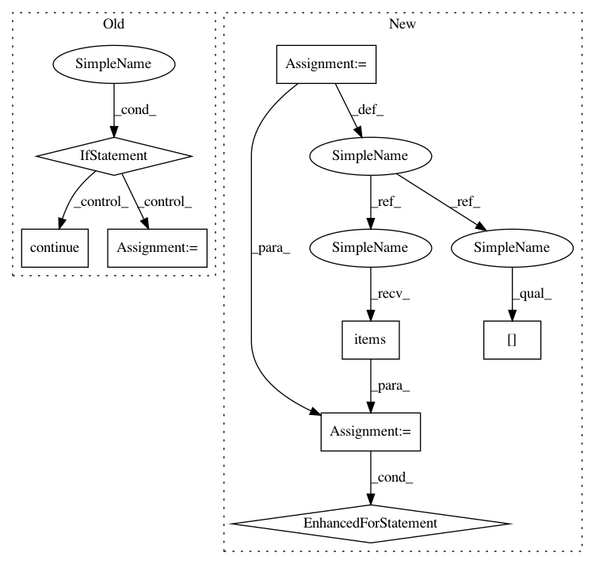

e6f1028be471f2ba7fdf877abf7f8f9d05b8c4ce,results/recommendations.py,,get_urls,#Any#,12
Before Change
for path in files:
rel_path = os.path.relpath(path, RESULTS_DIR)
model = os.path.split(rel_path)[-1]
if re.search(" sample [a-zA-Z0-9]$", model) or re.search(" sn[a-zA-Z0-9]+$", model):
// Skip measurements with sample or serial number, those have averaged results
continue
key = model.lower()
url = "/".join(FrequencyResponse._split_path(rel_path))
url = "https://github.com/jaakkopasanen/AutoEq/tree/master/results/{}".format(url)
url = urllib.parse.quote(url, safe="%/:=&?~//+!$,;"@()*[]")
urls[key] = "- [{model}]({url})".format(model=model, url=url)
After Change
def get_urls(files):
urls = dict()
skipped = dict()
for path in files:
rel_path = os.path.relpath(path, RESULTS_DIR)
model = os.path.split(rel_path)[-1]
if re.search(" sample [a-zA-Z0-9]$", model) or re.search(" sn[a-zA-Z0-9]+$", model):
// Skip measurements with sample or serial number, those have averaged results
model = re.sub(" sample [a-zA-Z0-9]$", "", model)
model = re.sub(" sn[a-zA-Z0-9]+$", "", model)
try:
skipped[model].append(rel_path)
except KeyError as err:
skipped[model] = [rel_path]
continue
urls[model.lower()] = "- [{model}]({url})".format(model=model, url=form_url(rel_path))
for model, rel_paths in skipped.items():
// Add skipped models with only one item, these have no averaged results
if len(rel_paths) == 1:
urls[model.lower()] = "- [{model}]({url})".format(model=model, url=form_url(rel_paths[0]))
return urls
def main():
In pattern: SUPERPATTERN
Frequency: 3
Non-data size: 8
Instances
Project Name: jaakkopasanen/AutoEq
Commit Name: e6f1028be471f2ba7fdf877abf7f8f9d05b8c4ce
Time: 2018-08-06
Author: jaakko.o.pasanen@gmail.com
File Name: results/recommendations.py
Class Name:
Method Name: get_urls
Project Name: jaakkopasanen/AutoEq
Commit Name: e6f1028be471f2ba7fdf877abf7f8f9d05b8c4ce
Time: 2018-08-06
Author: jaakko.o.pasanen@gmail.com
File Name: results/recommendations.py
Class Name:
Method Name: get_urls
Project Name: mynlp/ccg2lambda
Commit Name: 5b5d9a9aedf8e11b9609d28b26b6488bc20cb08b
Time: 2017-03-24
Author: pascual@nii.ac.jp
File Name: scripts/semantic_types.py
Class Name:
Method Name: merge_dynamic_libraries
Project Name: home-assistant/home-assistant
Commit Name: 24d3cbdfe9f16fbf903259c2fb1870907cd5f9f5
Time: 2016-09-01
Author: happyleaves.tfr@gmail.com
File Name: homeassistant/components/switch/orvibo.py
Class Name:
Method Name: setup_platform